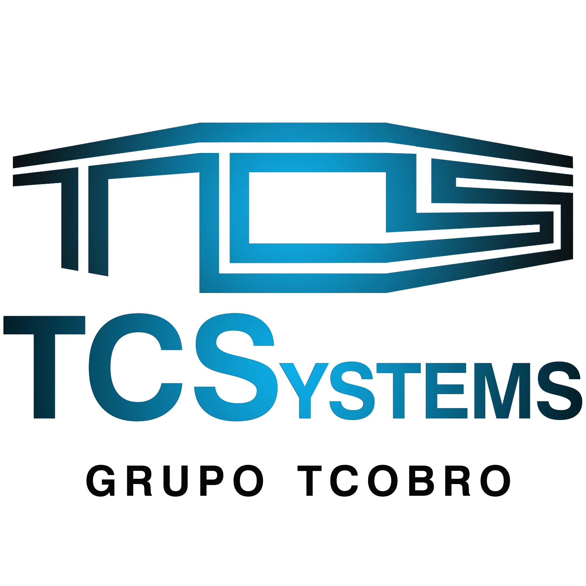

Análisis comparativo abril–mayo 2026, detección de regresiones, implementación de mejoras técnicas y configuración de medición de conversiones.
Variación mes a mes con mismo número de días (1–26 de cada mes). Fuente: Google Search Console y Google Analytics 4.
Menos volumen, pero usuarios mucho más comprometidos. Esto es coherente con el rediseno editorial del blog y la mejora de la home: el tráfico que llega convierte mejor (CTR ×2, engagement +29%, duración +71%) aunque el volumen baje por la consolidación del dominio.
Acciones técnicas aplicadas en el repositorio, configuración de hosting y propiedades de medición.
| Acción | Tipo | Estado |
|---|---|---|
| Redirect 308 tcsystems.es → www.tcsystems.es | SEO técnico | En vivo |
| Dropdowns "Servicios" y "Productos" siempre en HTML SSR | SEO técnico | Desplegado |
| Columna "Servicios" añadida al footer (enlazado interno) | SEO técnico | Desplegado |
| Schema Organization corregido: Product → Service | Schema.org | Desplegado |
| Schemas Service individuales por producto (×4) | Schema.org | Desplegado |
| Evento generate_lead en envío de formulario | Analytics | Validado |
| Filtrado de /studio (Sanity admin) en GA4 | Analytics | Desplegado |
| Key events configurados en GA4 (generate_lead, form_start) | Analytics | Activo |
| Reindexación solicitada en Search Console | Indexación | En cola |
| Dispositivo | Clicks may | Clicks abr | Δ Clicks | Pos may | Pos abr | Lectura |
|---|---|---|---|---|---|---|
| Desktop | 42 | 31 | +35% | 20,9 | 16,0 | Crece en clicks pero pierde 5 posiciones |
| Mobile | 15 | 8 | +87% | 12,7 | 16,6 | Mejora ranking y clicks (gran avance) |
| Página | Clicks may | Clicks abr | Diagnóstico |
|---|---|---|---|
| / (home) | 38 | 31 | Mejora +23% clicks, duración +55% |
| /blog | 4 | 2 | Mejora Doble de clicks |
| /productos/elysium | 3 | 0 | Nuevo Rankea por primera vez |
| /productos/prometheus | 1 | 0 | Nuevo Comienza a recibir tráfico |
| /parkings | 0 | 3 | Regresión Investigado y resuelto |
| /blog/seguridad-datos-cifrado-pagos | 1 | 0 | Caída visibilidad 152 → 96 impresiones |
| Canal | Sesiones may | Sesiones abr | Δ | Engagement may |
|---|---|---|---|---|
| Direct | 197 | 286 | −31% | 27,9% |
| Organic Search | 98 | 60 | +63% | 63,3% |
| Referral | 16 | 25 | −36% | 81,3% |
| Organic Social | 15 | 2 | +650% | 73,3% |
| Unassigned | 15 | 3 | +400% | 53,3% |
Problemas identificados durante la auditoría que estaban impactando ranking, conversión o calidad del dato.
Search Console mostraba 787 impresiones para tcsystems.es/ y 132 impresiones para www.tcsystems.es/ de manera paralela. Aunque el canonical apuntaba a la versión www, no existía redirect 308 desde el dominio raíz.
Impacto: reparto de autoridad de enlaces entre dos URLs distintas, métricas fragmentadas en GA4/GSC, y posibles inconsistencias en SERP.
Las páginas /parkings, /control-accesos y /verifactu existían en el sitemap pero no aparecían en el HTML SSR. El componente Header las renderizaba dentro de un dropdown con conditional rendering ({isOpen && ...}), por lo que el HTML estático servido al crawler de Google estaba vacío de esos enlaces.
Impacto: Google indexaba las páginas (vía sitemap) pero no transfería autoridad interna. /parkings cayó de 3 clicks en abril a 0 en mayo.
El JSON-LD de Organization incluía un OfferCatalog declarando EVO, Prometheus y Elysium como Product. Search Console reportaba 6 elementos no válidos en "Fragmentos de productos" por falta de offers, review o aggregateRating.
Impacto: bloqueaba rich snippets en SERP y generaba avisos persistentes en la propiedad GSC.
El admin de Sanity en /studio* registraba page_views, sessions y eventos en GA4 (15 sesiones en mayo) sin distinguirse del tráfico real de visitantes.
Impacto: métricas falseadas, engagement rate diluido, conversiones imposibles de atribuir correctamente.
El formulario de contacto enviaba leads via API pero no disparaba ningún evento a GA4. La propiedad reportaba 0 conversiones a pesar de 16 form_start en mayo. Ningún evento estaba marcado como key event.
Impacto: sin atribución de tráfico a leads, sin posibilidad de optimizar canales por valor real.
/blog/seguridad-datos-cifrado-pagos perdió 56 impresiones (152 → 96) entre abril y mayo. Rankea para queries muy técnicas (HSM, telemetría criptográfica) y solo 1 query con potencial comercial ("pagos cifrados") en posición 3,83 pero con 0 clicks — señal clara de title meta poco atractivo.
Todos los cambios han sido desplegados en producción y validados. Detalles técnicos y commit references abajo.
Configurado en el panel de Vercel: tcsystems.es → 308 Permanent Redirect → www.tcsystems.es. Se cambió el código de respuesta de 307 (temporal, por defecto) a 308 para preservar autoridad SEO.
Validación: curl -I https://tcsystems.es/parkings devuelve HTTP/2 308 con location correcta.
En components/Header.tsx: cambiado conditional rendering por visibilidad CSS. Los enlaces a servicios y productos están ahora siempre en el HTML estático que sirve Next.js, con atributos aria-expanded y tabIndex para accesibilidad.
Adicionalmente se añadió una nueva columna "Servicios" en components/Footer.tsx con enlaces directos a /parkings, /control-accesos y /verifactu.
Verificación: el HTML estático de la home contiene ahora 2 ocurrencias de cada link (header + footer). Antes contenía 0.
Nivel Organization (app/layout.tsx): el OfferCatalog ahora declara cada elemento como Service (no Product), evitando el error de "offers requerido" y reflejando mejor el modelo B2B de TCSystems.
Nivel página de producto: cada una de las 4 páginas de producto incluye su propio JSON-LD Service específico, con provider, areaServed España, audience empresarial, image y offer con priceCurrency EUR enlazado al contacto. Componente reutilizable components/ProductServiceSchema.tsx.
En components/ContactForm.tsx: tras la respuesta exitosa de la API se dispara sendGAEvent('event', 'generate_lead', { product, form_location }).
El evento se envía sin value monetario (los leads B2B varían demasiado para asignar un valor uniforme), pero incluye dimensiones útiles para atribución posterior.
En GA4 se han marcado como key events: generate_lead y form_start. Validado en informe Tiempo Real.
components/ConditionalLayout.tsx: el componente <GoogleAnalytics> ya no se renderiza cuando pathname.startsWith('/studio'). El admin Sanity deja de generar page_views y eventos en GA4.
Solicitada inspección y reindexación de la home en Search Console para acelerar la propagación del nuevo schema y la consolidación de URLs.
Análisis sobre 87 días (marzo–mayo 2026)
| Query | Impresiones | Posición | Clicks |
|---|---|---|---|
| systems tc | 168 | 5,93 | 0 |
| tc systema | 81 | 9,59 | 0 |
| t systems | 20 | 47,2 | 0 |
| t-systems | 7 | 43,3 | 0 |
| tec systems | 11 | 14,4 | 0 |
No es un problema técnico de la web. La marca TCSystems colisiona en SERP con otras tres marcas muy buscadas a nivel global:
Google posiciona tcsystems.es en posiciones 5-15 porque considera la palabra clave relevante, pero los usuarios buscan otra empresa y eligen el resultado correcto. Las 168 impresiones son tráfico fantasma: no representan oportunidad real de tráfico cualificado.
Recomendación opcional: reforzar la geolocalización en el title (ej. añadir "Madrid" o "España") y enriquecer el schema Organization con alternateName para reforzar la entidad. Sin urgencia.
Análisis sobre 56 días. Health score compuesto y queries que rankea.
| Métrica | Valor | Veredicto |
|---|---|---|
| Health score compuesto | 35 / 100 | Crítico |
| Clicks (56 días) | 0 | Sin conversión |
| Posición media | 45,1 | Fuera del top |
| Query "pagos cifrados" | Pos 3,83 / 0 clicks | Snippet no atrae |
| Bounce rate GA4 | 100% | Crítico |
El post rankea para queries demasiado técnicas (HSM, telemetría criptográfica, monitoreo de operaciones criptográficas) que no son las que buscan los clientes B2B de TCSystems. La única query con potencial comercial ("pagos cifrados") está en posición 3,83 con 0 clicks — el title meta no consigue atraer.
Próximas acciones priorizadas para los próximos 30 días.
| Acción | Responsable | Esfuerzo |
|---|---|---|
| Actualizar copy del post /blog/seguridad-datos-cifrado-pagos en Sanity (title, meta, H1) | TCSystems | 30 min |
| Verificar en Rich Results Test que los 4 schemas Service de producto se detectan sin errores | rcolabs | 10 min |
| Comprobar en GSC que el aviso de "Fragmentos de productos" desaparece (2-7 días) | rcolabs | monitorizar |
| Acción | Impacto esperado |
|---|---|
| Optimizar n8n blog automation: prompt que evite jerga técnica y oriente hacia queries comerciales | Posts nuevos con mayor potencial de ranking |
| Crear contenido específico para "sistemas de cobro para [sector]" (cafetería, lavandería, gasolinera): tienen 30-90 impresiones cada uno en pos 30-60 | Subir 5-10 posiciones en ~10 queries con potencial |
| Añadir FAQ schema en las páginas de producto | Rich snippets adicionales en SERP |
| Reforzar geolocalización en title de la home ("Madrid" o "España") | Diferenciación de marca vs T-Systems / TCS |
El trabajo realizado durante esta sesión cubre todas las regresiones críticas detectadas en abril–mayo y deja los cimientos analíticos para medir el impacto en las próximas semanas. Las mejoras técnicas (redirect, dropdowns, schemas) son cambios estructurales que seguirán generando valor sin mantenimiento adicional. La nueva medición de conversiones permitirá tomar decisiones basadas en datos reales a partir de la semana siguiente.